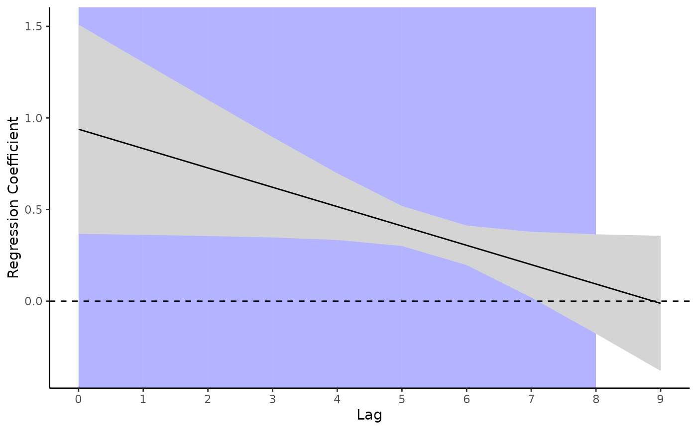
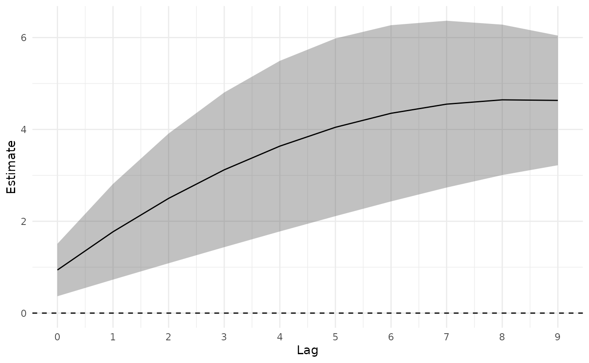

Example Usage
example-usage.Rmd
library(tidydlnm)
library(tibble)
library(dplyr)
#>
#> Attaching package: 'dplyr'
#> The following objects are masked from 'package:stats':
#>
#> filter, lag
#> The following objects are masked from 'package:base':
#>
#> intersect, setdiff, setequal, union
library(dlnm)
#> This is dlnm 2.4.7. For details: help(dlnm) and vignette('dlnmOverview').Suppose we have the following data, where lags 0 through 9 are the
values of some exposure experienced 0 to 9 days before the outcome
y.
#> # A tibble: 100 × 11
#> lag0 lag1 lag2 lag3 lag4 lag5 lag6 lag7 lag8 lag9 y
#> <dbl> <dbl> <dbl> <dbl> <dbl> <dbl> <dbl> <dbl> <dbl> <dbl> <dbl>
#> 1 0.0608 0.309 1.29 1.29 0.782 -0.482 -0.886 -1.93 -1.57 -1.48 49.1
#> 2 0.977 0.468 -0.480 -0.993 -0.483 -1.10 -2.97 -1.94 -3.00 -3.58 65.3
#> 3 -2.14 -1.60 -1.10 -1.06 -1.26 -0.357 -1.40 -2.13 -3.20 -3.55 57.7
#> 4 1.54 1.91 2.28 3.01 3.84 4.64 4.19 5.73 5.20 6.07 51.9
#> 5 -0.0265 0.679 -0.100 1.63 3.12 3.33 3.83 3.82 2.35 0.195 48.4
#> 6 0.454 -1.18 -1.79 -2.54 -3.46 -2.51 -1.93 -2.42 -3.52 -3.36 47.1
#> 7 1.34 1.46 1.66 1.60 2.33 2.99 2.51 1.80 2.80 0.647 77.7
#> 8 -0.480 1.61 2.55 3.04 2.95 2.20 2.14 2.81 4.10 4.31 69.3
#> 9 0.921 1.26 0.229 2.78 2.26 1.51 4.18 5.91 6.45 6.97 62.0
#> 10 0.599 0.442 0.534 -2.74 -2.61 -1.16 0.741 0.433 -0.918 -2.88 54.3
#> # … with 90 more rowsFirst, use the dlnm package to fit a distributed lag
model. We create the crossbasis, fit the model, and create the crosspred
object. (For more info, see https://github.com/gasparrini/dlnm).
Q <- dplyr::select(d, lag0:lag9)
cb <- dlnm::crossbasis(Q, lag=9,
argvar=list("lin"),
arglag=list(fun="ns"))
mod <- lm(y ~ cb, data=d)
cpred <- dlnm::crosspred(cb, mod, at=1, cumul = TRUE)Then use tidydlnm to obtain more tidyverse-friendly
output and plots.
Estimated effect over all lags
tidy_overall_fit(cpred)
#> # A tibble: 1 × 4
#> estimate se ci_lower ci_upper
#> <dbl> <dbl> <dbl> <dbl>
#> 1 4.63 0.720 3.22 6.04Cumulative effect estimates at each lag
cumul_fits <- tidy_cumul_fits(cpred)Add optional shading to plot of estimates at each lag with the
shading argument.
tidy_lag_plot(lag_fits, shading = T)
#> Warning: Unknown or uninitialised column: `signSum`.
#> Unknown or uninitialised column: `signSum`.
#> Unknown or uninitialised column: `signSum`.
#> Unknown or uninitialised column: `signSum`.
#> Unknown or uninitialised column: `signSum`.
#> Unknown or uninitialised column: `signSum`.
#> Unknown or uninitialised column: `signSum`.
#> Unknown or uninitialised column: `signSum`.
#> Unknown or uninitialised column: `signSum`.
#> Unknown or uninitialised column: `signSum`.
#> Unknown or uninitialised column: `signSum`.
#> Unknown or uninitialised column: `signSum`.
#> Unknown or uninitialised column: `signSum`.
#> Unknown or uninitialised column: `signSum`.
#> Unknown or uninitialised column: `signSum`.
#> Unknown or uninitialised column: `signSum`.
#> Unknown or uninitialised column: `signSum`.
#> Unknown or uninitialised column: `signSum`.
#> Unknown or uninitialised column: `signSum`.
#> Unknown or uninitialised column: `signSum`.
Note that the same plotting function can be used to plot the cumulative estimates. Also, since this is a ggplot object, the plot can be customized as any other ggplot.
library(ggplot2)
tidy_lag_plot(cumul_fits) +
ylab("Estimate") +
theme_minimal()
For a summary of specific windows of association identified by the
model, use tidy_window_summary().
tidy_window_summary(lag_fits)
#> # A tibble: 1 × 9
#> window_id min_lag max_lag window_len max_estimate se ci_lower ci_up…¹ lag
#> <dbl> <int> <int> <dbl> <dbl> <dbl> <dbl> <dbl> <int>
#> 1 1 0 7 8 0.938 0.291 0.367 1.51 0
#> # … with abbreviated variable name ¹ci_upper